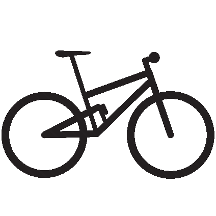

Curriculum Vitae
Work Experience
-
May 2018 - May 2022
R&D SOFTWARE ENGINEER
Synapta s.r.l.
I started working at Synapta right after my Master's Degree and I carried on the collaboration in parallel with the activity of the reasearch scholarship. I worked on data analysis and software development for artificial intelligence, and on the backend-side integration of such applications. I manly worked for the website contrattipubblici.org, but I have also contributed to other minor projects.
- I applied several data analysis, natural language processing (NLP) and machine learning techniques to derive new data from the existing knowledge base
- I identified and classified references to the norm UNI-EN ISO 9001 inside public administrations' documents using information extraction and machine learning techniques.
- I devised machine learning and NLP strategies for out-of-core computation on huge data volumes
- Main backend web developer and QA analyst of contrattipubblici.org.
- I configured and monitored the company's main services on dedicated servers, according to data redundancy and high availability principles
- I managed the entire development process of about 250000 document of interest (search with APIs, download and insertion to database, Optical Character Recognition (OCR), classification and indexing in a search engine)
- I renewed the project TellMeFirst by rewriting it from scratch in python in a clearer, lighther and more modular way, and by making it available as an API.
- I worked on the app for Android devices BandiPubblici, in particular I took care of the development of its backend and the integration with the existing services, the release on the play store, and in-app purchases.
- I developed the entire backed side of the website Data for Citizen Engagement for the Fondazione Compagnia di San Paolo, including the computation of values for each graph starting from the raw data.
- I worked on the Wiki Loves Monuments project by developing a Authorization insertion form, for Wikimedia Italy.
-
June 2018 - June 2019
RESEARCH FELLOW FOR THE REPOSUM PROJECT
Università degli Studi di Torino & Synapta s.r.l.
The scholarship is funded by the Department of Philosophy and Educational Sciences of UniTo, and involves the annotation alaysis and representation of a corpus of metadata about italian and foreign PhD dissertations using natural language processing and machine learning techniques. I closely cooperated with the members of the Department of Philosophy and Computer Science to achieve the research goals.
- I presented the results of the research work of the team at the IRCDL conference in Pisa in 2019.
- Classification of Philosophy theses using hybrid machine learning approaches
- Determination of the subject of the thesis with a strategy based on topic modeling
- Feature extraction from documents with several techniques such as bag-of-words, entity recognition, entity linking
- Study and application of several graph mining techniques in order to detect similarity links between theses based on semantic features
- I have rewritten in python the tool RelFinder to use it programmatically in the research activity
Read the final report of the research activity (only available in Italian).
-
April 2015 - September 2015
RESEARCH INTERNSHIP
Cognitive Systems Group (Universität Bremen)
Cognitive Systems Group (CoSy) is a research center of the University of Bremen that studies how the human mind processes spatial information and the surrounding events, and develops tool that helps the humans in these tasks. I worked for 6 months as an intern researcher thanks to the Erasmus+ program, where I had the opportunity to collaborate with a multicultural and multidisciplinary team in the context of a european project (Cognitive Vision).
- Camera movement estimation based on detected motion in scene
- Applicazione of different methods for face detection and face recognition in the movie domain
- Training of custom shapes and objects detectors
Education
-
September 2015 - April 2018
MASTER DEGREE IN COMPUTER ENGINEERING
Politecnico di Torino
I chose the Software path, thaught in english, and included some courses from the Data Science path. I wored on my Thesis in the Istituto Superiore Mario Boella (ISMB), a research center that is highly focused in innovation. My wor consists in determining the personality of Twitter users based on their tweets using machine learning and natural language processing techniques.
- Thesis: Semantic Analysis to Compute Personality Traits From Social Media Posts
- Read the Thesis at this link (TLDR; look at the presentation!)
- Final Grade: 99/110
-
September 2011 - March 2015
BACHELOR DEGREE IN COMPUTER ENGINEERING
Università degli Studi Dell'Aquila
I worked at the Thesis in the DEWS research center, with the objective of developing and testing a local database for an embedded face recognition system.
- Thesis: Design, implementation and exploitation of a Database to support an embedded face recognition system
- Final Grade: 102/110
-
September 2006 - July 2011
HIGH SCHOOL DIPLOMA
Liceo Scientifico "A. Bafile", L'Aquila
Liceo Scientifico Sperimentale PNI (Computer Science National Plan).
- Final Grade: 93/100
Publications
- Carducci, G., Rizzo, G., Monti, D., Palumbo, E., Morisio, M., TwitPersonality: Computing Personality Traits from Tweets using Word Embeddings and Supervised Learning, Multidisciplinary Digital Publishing Institute (MDPI), 2018. doi.org/10.3390/info9050127
- Carducci G., Leontino M. Radicioni, D. P. Bonino, G., Pasini E., Tripodi P., Semantically Aware Text Categorisation for Metadata Annotation, Italian Research Conference on Digital Libraries (IRCDL), 2018.
- Futia, G., Vetrò, A., Carducci, G., Allavena, D., De Martin, J. C., Modeling the Semantics of Structured Sources with Steiner Trees and Relational Graph Convolutional Networks, Journal of Web Semantics, 2018.
- Work in progress...
Skills
Python
Natural Language Processing
Machine Learning
Problem Solving
Show all
Courses and Certificates
Machine Learning by Andrew Ng
Coursera
IELTS 7.5 (CEFR C1)
British Council
CCNA Routing and Switching
CISCO Networing Academy
Intensive English Course
CES Oxford Centre of English Studies Wheatley (UK)
Company Creation
Starboost
Interests and passions

Photography

Cycling
Mountain
Sustainability and Environment
IA & Deep Learning
Photo & Video editing
Cooking
Classical Music